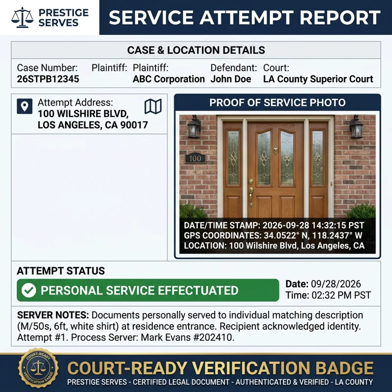

Professional Process Serving: Los Angeles, California & Nationwide
Licensed, bonded process server Los Angeles — rush, same-day, and emergency process serving across LA County, Beverly Hills, Santa Monica, Pasadena, Long Beach, and nationwide. Court-ready proof of service with real-time updates. Order Online Today.
Fast, Compliant, and Verified Process Serving
When you need legal documents delivered, timing and compliance are everything. Based in Los Angeles, we provide professional process serving for law firms, businesses, and private individuals. Whether you need to serve a defendant in Downtown LA, across the state of California, or anywhere in the United States, we act as your single point of contact to get the job done.
Request Process Serving1240 S Corning Street, Suite 105
Los Angeles, CA 90035
Our Process Serving Coverage Areas
Local Los Angeles Service
We provide direct, boots-on-the-ground service throughout Los Angeles County. Our registered process servers are experts in navigating local traffic and court systems, including the Stanley Mosk Courthouse and all regional justice centers.
We frequent these key areas:
- Downtown Los Angeles (DTLA) & Central District
- Westside: Santa Monica, Beverly Hills, West Hollywood, Century City, Culver City, West LA
- San Fernando Valley: Van Nuys, Burbank, Glendale, Sherman Oaks
- South Bay: Long Beach, Torrance, Manhattan Beach
- San Gabriel Valley: Pasadena, Alhambra, Arcadia
- Orange County & Neighboring Counties: Full coverage across Southern California
California Statewide Service
Need service outside of LA? We manage service throughout California in strict compliance with the California Code of Civil Procedure (CCP). From San Diego to San Francisco and Sacramento.
Nationwide Process Serving
We facilitate nationwide process serving across all 50 states. We handle the logistics, manage the affiliates, and ensure you receive a proper Proof of Service (POS) for your local court filing.
Service Levels & Pricing Tiers
We offer flexible scheduling to meet your court deadlines. Standard 3% transfer & processing fee is calculated and applied at checkout.
Standard Service
Rush Serve
Priority Serve
Emergency Serve
Document Printing & Proof of Service by Mail
Document Printing
| Service Details | Rate |
|---|---|
| Black & White PrintingPer page | $0.35 |
Proof of Service by Mail
Standard · Client Prep
| Service | Rate |
|---|---|
| POS PreparationDocument drafted & provided to client | $35 |
| PrintingPer page | $0.35 |
| First-Class MailingPostage + handling | $20 |
Premium · Attorney Service
| Service | Rate |
|---|---|
| White-Glove POSFull prep, print & mail | $85 |
| Certified Mail w/ Return ReceiptUSPS green card, tracked & documented | $39 |
| NotarizationNotarized POS where required | $25 |
| Court FilingFiled directly with the court | $65 |
Premium service is a fully managed, hands-off experience — we handle every step from preparation to court filing so your firm can stay focused on the case. Itemized billing available on request.
Types of Legal Documents We Serve
We handle all civil and family law documents, including but not limited to:
Summons
Subpoenas
Divorce Petitions
Complaints
Photo-Verified Proof of Service: Geotagged & Timestamped Photos of Every Attempt
Every service attempt by Prestige Serves is documented with photos that carry embedded GPS coordinates and a verified date and time. You see where we were and when, whether the attempt succeeded, found no one home, or turned up a bad address.
What you receive with each attempt
- Geotagged photo of the service location
- Date and time stamp on every photo
- Attempt notes describing the outcome
- Court-ready proof of service when service is completed
How photo documentation supports substituted service in California
Before a court allows substituted service under California Code of Civil Procedure § 415.20, you generally must show that personal service was attempted with reasonable diligence. Timestamped, geotagged photos of each attempt give your declaration objective support for where and when attempts were made. The court decides whether diligence was shown.
Need an address first? See our skip tracing service. Need repeated attempts at a difficult address? See our stakeout service. Serving outside California? See nationwide process serving.

Why Legal Professionals Trust Us
Process Serving isn't just delivery — it's a deadline-driven legal task that must be done right the first time.
Affidavit of Service
A signed proof of service, ready to file with the court.
Photo-Verified Proof of Service
Geotagged and timestamped photos of every attempt, included with your file.
Real-Time Email Updates
An update after each attempt, so you never have to chase status.
Frequently Asked Questions
Do you provide photos of service attempts?
Yes. Prestige Serves documents every service attempt with geotagged and timestamped photos. You receive them with your real-time updates, and they are included in your file along with your court-ready proof of service.
What is a geotagged photo, and why does it matter in court?
A geotagged photo has GPS coordinates embedded in its file data that show where it was taken, and a timestamp records when. Together they give objective support that our process server was at the address on the stated date and time. This can help if someone later claims service was never attempted or was made at the wrong place. The sworn proof of service remains the legal record, and the photos support it.
How quickly will I receive documentation after an attempt?
You receive an update by email after each attempt, and you can check status in your client portal. Photos are included with those updates. When the first attempt happens depends on your service level: Emergency is same-day, Priority is within 2 business days, Rush is within 3 business days, and Standard is within 5–7 business days.
Can photo documentation support a request for substituted service?
Yes, it can help. In California, substituted service under Code of Civil Procedure § 415.20 generally requires that personal service was first attempted with reasonable diligence. Geotagged, timestamped photos of each attempt help document that effort in your declaration. The court decides whether diligence was shown, and this is general information, not legal advice.
Does Prestige Serves provide proof of service for California courts?
Yes. When service is completed, a registered process server signs a proof of service declaration that is ready to file in California courts, and we include your photo documentation with the file. We can also prepare, mail and file proofs of service by mail for you; see the pricing on our process serving page.
How fast can you serve documents?
Standard service ($97.99) makes the first attempt within 5–7 business days. Rush ($119.99) is within 3 business days, Priority ($149.99) is within 2 business days, and Emergency ($249.99) is same-day. A 3% transfer and processing fee is added at checkout.
Do you serve outside Los Angeles?
Yes. We serve throughout Los Angeles County, across California in compliance with the California Code of Civil Procedure, and in all 50 states through our affiliate network. You receive a proof of service for your local court filing.
What happens if service cannot be completed?
Every attempt is documented and reported to you, including attempts that find no one home or a bad address. If the person cannot be found, that record shows what was tried and when. You can then order skip tracing to locate a new address or a stakeout for a difficult location.